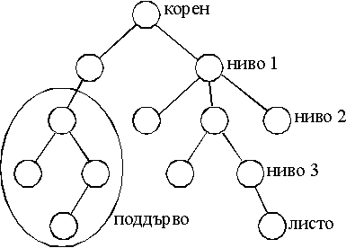
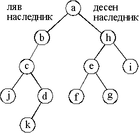
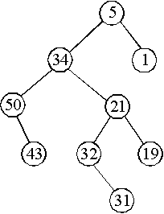
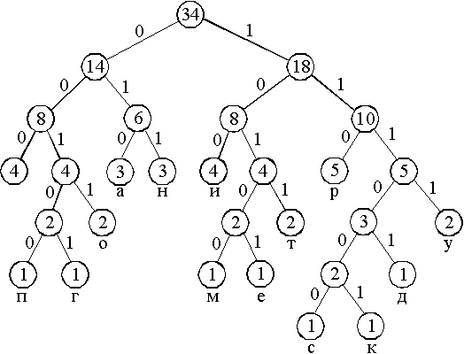

За аритметичния израз:
1) preorder (клд) - *+a/bc-d*ef
2) inorder (лкд) - a+b/c*d-e*f
3) postorder (лдк) - abc/+def*-*

| Ацикличен насочен граф, в който всички върхове без 1 имат по 1 предшественик, а 1 връх (корен) няма предшественици се нарича дърво. От всеки връх има единствен път до корена; броят на върховете по пътя до корена се нарича ниво на върха. Коренът е от ниво 0. Листо се нарича връх без наследници. Поддърво определено от връх се образува от върхът и всичките му наследници, техните наследници и т.н. |  |
** Дефиниция на двоично дърво.
| Дърво, в което броят на наследниците
на върховете е 0, 1 или 2 се нарича двоично дърво. Всеки връх има ляв
и десен наследник (може и празно множество).
Рекурсивно определение на двоично дърво: Крайно множество от елементи (възли), което е или празно, или се състои от корен (възел), свързан с две непресичащи се двоични дървета (поддървета) - ляво и дясно поддърво. |
 |
Реализация с масив. Двоичното дърво от картинката може да се опише с 3 успоредни масива - първият масив съдържа данните във върховете, във вторият масив са индексите (от първия масив) на левите наследници и в третия масив са индексите на десните наследници.
| [0] a | [1] b | [2] c | [3] d | [4] e | [5] f | [6] g | [7] h | [8] i | [9] j | [10] k |
| 1 | 2 | 9 | 10 | 5 | - | - | 4 | - | - | - |
| 7 | - | 3 | - | 6 | - | - | 9 | - | - | - |
Реализация с указатели. Всеки връх се предсавя като
структура с данна и два указателя за левия и десния наследници.
struct Node
{ int info;
Node *pLeft, *pRight;
}
** Обхождане на структура от данни двоично дърво.
Обхождане на двоично дърво се нарича линейно нареждане
на възлите на дървото. Като използваме рекурсивната същност на двоичното
дърво, обхождаме три елемента - корен, ляво поддърво и дясно поддърво.
В зависимост от реда на обхождане на тези 3 елемента, получаваме и 6 вида
обхождане:
| - корен, ляво, дясно | (клд), | низходящо, | preorder |
| - ляво, корен, дясно | (лкд), | смесено, | inorder |
| - ляво, дясно, корен | (лдк), | възходящо, | postorder |
| Пример. Аритметични изрази и двоични дървета. Листата
са имена на променливи и константи, другите възли са аритметични операции.
За аритметичния израз: 1) preorder (клд) - *+a/bc-d*ef 2) inorder (лкд) - a+b/c*d-e*f 3) postorder (лдк) - abc/+def*-* |
|
** Дърво за двоично търсене.
Дърво за двоично търсене се нарича двоично дърво
със следните свойства:
- във всеки връх на дървото има записана данна, с ключ за търсене;
- ключът във на всеки връх е едновременно по-голям от всички
ключове в неговото ляво поддърво и по-малък от всички ключове в негото
дясно поддърво.
Търсенето в такова дърво изисква на-много толкова
проверки, колкото е най-голямото ниво на върховете му. Затова сложността
на алгоритъма за търсене в двоично дърво с n върха е O(log
n).
Пример. Построяване на дърво за двоично търсене
и обхождане на дървото.
// bstree.cpp
#include <iostream>
using namespace std;
struct Node
{ int info;
Node *pLeft, *pRight;
};
class Tree {
public:
Tree();
void print() const { pr(root);
}
private:
Node *root;
void addNode(int, Node* &);
void pr(const Node *) const;
};
Tree::Tree()
{ root = NULL;
int x;
while (cin >> x, !cin.fail()) addNode(x,
root);
}
void Tree::addNode(int x, Node* &p)
{ if (p == NULL)
{ p = new Node;
p->info = x;
p->pLeft = p->pRight
= NULL;
}
else addNode(x, x < p->info
? p->pLeft : p->pRight);
}
void Tree::pr(const Node *p)const
{ if (p)
{ pr(p->pLeft);
cout << p->info
<< " ";
pr(p->pRight);
}
}
int main()
{ cout << "Enter some integers to
be placed in a binary tree:\n";
Tree t;
cout << "Tree contents (in
ascending order):\n";
t.print();
cout << endl;
return 0;
}
|
Enter some integers to be placed in a
binary tree:
5 34 1 21 19 32 50 43 31 Tree contents (in ascending order): 1 5 19 21 31 32 34 43 50 |
| Това е дървото за двоично търсене, получено с данни
от програмата.
1) Търсим числото 19. Тръгваме от корена. 19 > 5 - наляво 19 < 34 - надясно 19 < 21 - надясно 19 = 19 2) Търсим числото 35. Тръгваме от корена. 35 > 5 - наляво 35 > 34 - наляво 35 < 50 - надясно листо 43 != 35 - няма такова число |
 |
** Пример за кодиране на следния текст: програмиране
и структури от данни
Броим честотите на срещане на буквите от текста:
| п | р | о | г | а | м | и | н | е | с | т | у | к | д | |
| 1 | 5 | 2 | 1 | 3 | 1 | 4 | 3 | 1 | 4 | 1 | 2 | 2 | 1 | 1 |
| Построяваме едно оптимално дърво. То не е единствено, защото в стъпка 4 от алгоритъма избираме две дървета с най-малки претеглени дължини, но може да има още дървета със същите претеглени дължини, т.е. изборът не е еднозначен. |  |
Кодиране на буквите от текста в съответствие с построеното дърво:
| п | р | о | г | а | м | и | н | е | с | т | у | к | д | |
| 1 | 5 | 2 | 1 | 3 | 1 | 4 | 3 | 1 | 4 | 1 | 2 | 2 | 1 | 1 |
| 00100 | 110 | 0011 | 00101 | 010 | 10100 | 100 | 011 | 10101 | 000 | 111000 | 1011 | 1111 | 111001 | 11101 |
Кодиране на целия текст - буква по буква (дължина 121 бита).
| п | р | о | г | р | а | м | и | р | а | н | е | и | ||
| 00100 | 110 | 001 | 00101 | 110 | 010 | 10100 | 100 | 110 | 010 | 011 | 10101 | 000 | 100 | 000 |
| 5 | 8 | 11 | 16 | 19 | 22 | 27 | 30 | 33 | 36 | 39 | 44 | 47 | 50 | 53 |
| с | т | р | у | к | т | у | р | и | о | т | д | а | н | н | и | ||
| 111000 | 1011 | 110 | 1111 | 111001 | 1011 | 1111 | 110 | 100 | 000 | 0011 | 1011 | 000 | 11101 | 010 | 011 | 011 | 100 |
| 59 | 63 | 66 | 70 | 76 | 80 | 84 | 87 | 90 | 93 | 97 | 101 | 104 | 109 | 112 | 115 | 118 | 121 |
Код на Хъфман за: програмиране и структури
от данни
00100110001001011100101010010011001001110101000100000
11100010111101111111001101111111101000000011101100011101010011100
Декодиране на текста.
корен - 0 наляво - 0 наляво - 1 надясно - 0 наляво - 0 наляво - листо
п
корен - 1 надясно - 1 надясно - 0 наляво - листо р
корен - 0 наляво и т.н.
** Програма за построяване на оптимално двоично дърво по алгоритъма
на Хъфман и получаване на кодовете на буквите.
// huffman.cpp
/* за компилатор Borland C++3.1 */
#include <iostream.h>
#include <string.h>
typedef unsigned char byte;
/* кодировка Windows-1251 */
byte text[] = "програмиране и структури
от данни";
/* кодировка ДОС */
// byte text[] = "Ї°®Ј° ¬Ё° Ґ Ё ±І°іЄІі°Ё
®І ¤ Ё";
int text_len;
struct Huf {
byte id;
int wh;
Huf *left, *right;
};
struct List {
List *next;
Huf *tree;
};
List *head;
char code[256];
void createList();
void writeList();
void delList(List *);
void addList(Huf *);
Huf *findDels();
void createTree();
void rlrootTree(Huf *, unsigned);
int main()
{ text_len = strlen(text);
createList();
writeList();
createTree();
cout << "writeCodes\n";
rlrootTree(head->tree, 0);
cout << endl;
return 0;
}
void createList()
{ int i;
int ch[256] = {0};
for (i=0; i<text_len; i++) ch[text[i]]++;
List *l;
Huf *h;
head = 0;
for (i=0; i<255; i++) if (ch[i]>0)
{ h = new Huf;
h->id = i; h->wh =
ch[i];
h->left = 0; h->right
= 0;
l = new List;
l->tree = h;
l->next = head; head
= l;
}
}
void writeList()
{ cout << "writeList\n";
List *l = head;
while (l)
{ cout << (l->tree)->id <<
" ";
l = l->next;
}
cout << endl;
l = head;
while (l)
{ cout << (l->tree)->wh <<
" ";
l = l->next;
}
cout << endl;
}
void delList(List *l)
{ List *lp, *lc;
if (l==head) { head=l->next; delete
l; }
else
{ lp = head; lc = lp->next;
while (lc!=l) { lp = lc;
lc = lc->next; }
lp->next = lc->next; delete
lc;
}
}
void addList(Huf *h)
{ List *l = new List;
l->tree = h;
l->next = head;
head = l;
}
Huf *findDels()
{ List *l = head, *sm = head;
Huf *h;
while (l)
{ if ((l->tree)->wh < (sm->tree)->wh)
sm = l;
l = l->next;
}
h = sm->tree;
delList(sm);
return h;
}
void createTree()
{ Huf *h, *h1, *h2;
while (head->next)
{ h1 = findDels();
h2 = findDels();
h = new Huf;
h->id = ' '; h->wh
= h1->wh + h2->wh;
h->left = h1; h->right
= h2;
addList(h);
}
}
void rlrootTree(Huf *h, unsigned index)
{ if (h)
{ code[index] = '0';
rlrootTree(h->right,
index+1);
if (h->left == 0)
{ code[index] = '\0';
cout <<
h->id << "->" << code << " ";
}
code[index] = '1';
rlrootTree(h->left,
index+1);
}
}
|
writeList
у т с р п о н м к и е д г а 2 3 1 5 1 2 3 1 1 4 1 1 1 3 4 writeCodes а->0000 н->0001 р->001 п->01000 с->01001 к->01010 м->01011 о->0110 у->0111 ->100 и->101 т->110 д->11100 е->11101 г->1111 |
Програмата построи друго оптимално дърво, различно
от нарисуваното по-горе.